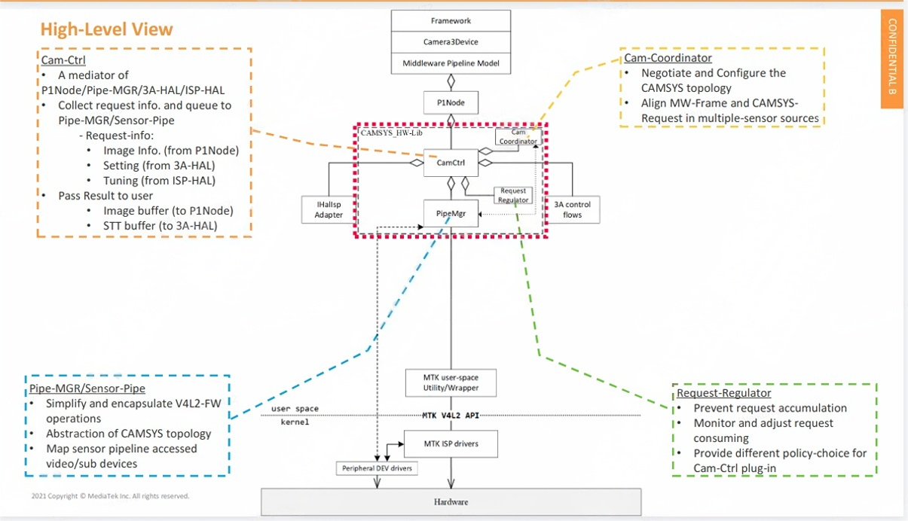
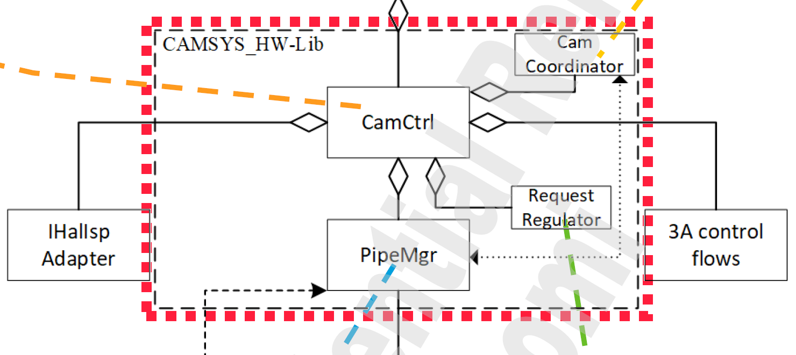
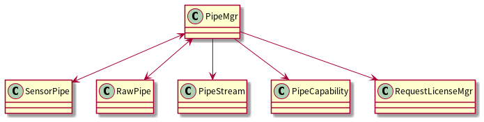
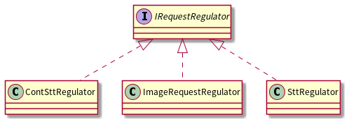
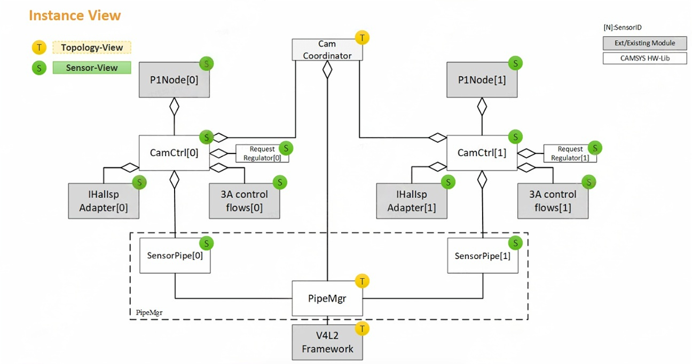
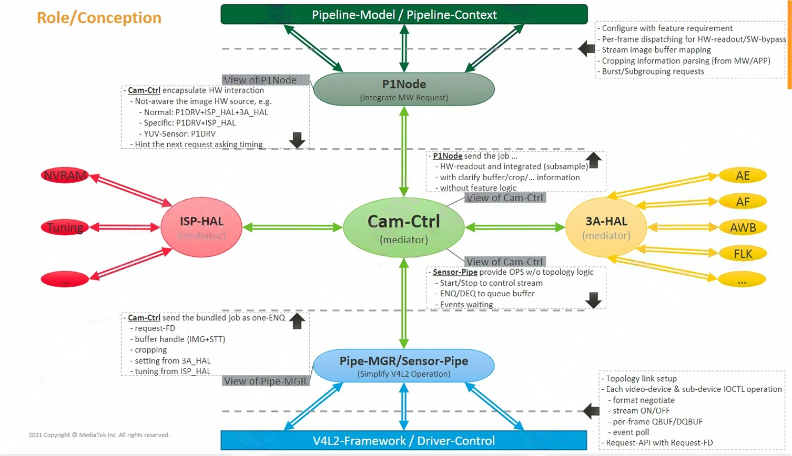
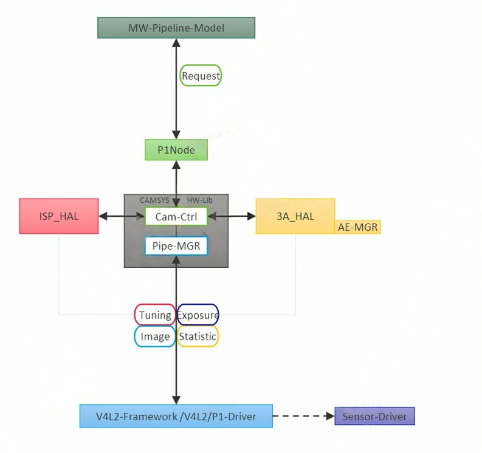

MTKcam-ISP7-Camsys Hw-Lib
High-Level view

CAMSYS_HW-Lib所在位置如上图红框所示，包含CamCtrl，PipeMgr，CamCoordinator，RequestRegulator四个模块，向上通过CamCtrl沟通P1Node，向下通过PipeMgr对接drivers，访问硬件，同时CamCtrl还可以沟通IHALIsp Adapter和3A control flows。

CamCtrl:
文件目录：vendor/mediatek/proprietary/hardware/mtkcam-core/hw/camsys/cam_ctrl/
CamCtrl是P1Node/PipeMgr/3A HAL/ISP HAL的协调者。其主要有两个作用：
- 搜集从P1 Node过来的request Info，然后queue给driver（使用PipeMgr并通过SensorPipe接口丢给MTK drivers):
request Info包含： - Image Info. (from P1Node)，例如上层传下来的buffer size，format等
- Setting (from 3A-HAL)，例如需要给到driver的gain值，曝光等
- Tuning (from ISP-HAL)，例如从tuning参数中获取的信息等
- 从driver中做deque(使用PipeMgr并通过SensorPipe接口),并将结果传递给用户：
- Image buffer(to P1Node)
- STT buffer(to 3A HAL)，如AAO，AFO等统计信息
PipeMgr/SensorPipe:
文件目录：vendor/mediatek/proprietary/hardware/mtkcam-core/hw/camsys/pipe_mgr/
pipeMgr的作用：
- 简化和封装V4L2-FW操作
- 抽象化CamCtrl
- 构建sensor map，映射driver中的设备文件
pipe_mgr兼容isp6，pipe_mgr目录下有isp6s和isp7两个目录。主要有如下几个类：

PipeCapability类没在代码中找到定义。PiPeMgr和sensorPipe互为友元，PiPeMgr和RawPipe互为友元。剩下三个是PipeMgr的友元，可以访问PipeMgr的数据。
CamCoordinator:
文件目录：vendor/mediatek/proprietary/hardware/mtkcam-core/hw/camsys/cam_coordinator/
CamCoordinator作用：
- Negotiate and Configure the CAMSYS topology
- Align MW-Frame and CAMSYS Request in multiple-sensor sources
RequestRegulator:
文件目录：vendor/mediatek/proprietary/hardware/mtkcam-core/hw/camsys/request_regulator/
RequestRegulator的作用：
- 防止request累积，因为enque给driver的request都需要被消费，不会被drop，所以当P1处理较慢就会形成堆积。
- 监控和调整request消耗
- 为Cam Ctrl提供不同的策略选择

主要有ContSttRegulator，ImageRequestRegulator，SttRegulator三个类对IRequestRegulator接口的实现。
Instance view
如下是从instance view的视角来看Camsys-HW-Lib各个模块间的关系:

1.此图是一个multicam的例子，可以看到左右两边是对称的
2. PipeMgr针对不同的sensor有开出两个SensorPipe接口，不同Sensor的CamCtrl会使用的不同的SensorPipe接口实例
3.其他的如：P1Node、HalISP、Hal3A、RequestRegulator也都是每个实例服务对应的单颗sensor
4.而像CamCoordinator、PipeMgr、V4L2 Framework因为需要统筹整个系统的资源，所以是Topology的View
从这个图也可以看出，CamCtrl和P1Node等可以有多个实例，CamCoordinator和RequestRegulator只有单个实例，用于统筹CamCtrl和P1Node等模块
The role/conception of module-layer
下图描述了从PipelineModel→ P1Node→ CamCtrl→ PipeMgr→ V4L2各层级作用和扮演的角色。

Data Processing

例如：pipelineModel会送一个request给P1Node，P1Node会送给CamCtrl，到了CamCtrl之后，它会跟P1Node拿image、跟ISP_HAL拿tuning、跟HAL3A拿setting，都准备好后就一整包使用同一个request-FD打包好后送给PipeMgr，之后再透过PipeMgr往V4L2 FrameWork进行设置，进而控制底层driver的行为。
ISP7 之前 P1Node 会跟 Hal3A、P1Driver、HalISP 都有交互,目前在 ISP7 上对 P1Node 有做解耦操作,P1Node 会跟 MW 对接,处理 feature 相关的部分,而跟其他模块交互的动作就交给了 CamCtrl,使 P1Node 的工作变得单纯,也使得 CamCtrl 可以不用关注 feature 相关的部分。
参考文章：
[ISP7]CAMSYS_HW-Lib_P1Node_CamCtrl.pdf